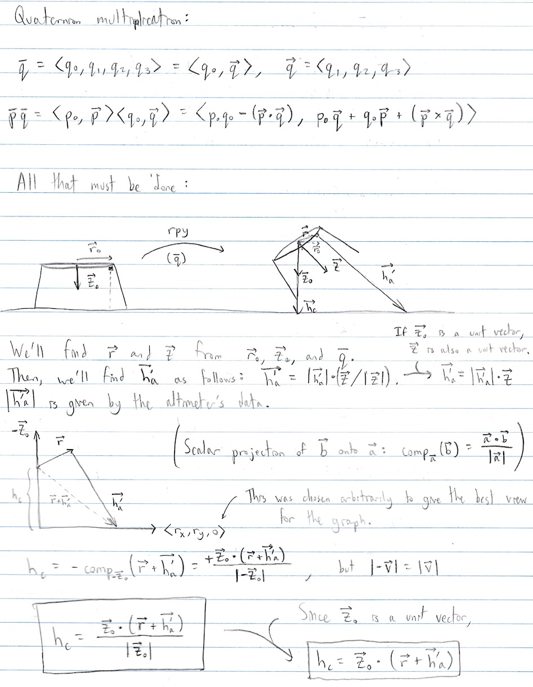

Determine the vehicle center's true altitude using sensor data.
We had a unidirectional LiDAR (Light Detection and Ranging) sensor as our altimeter that found the distance from the bottom of the vehicle to the ground, but the data returned would not be accurate if the vehicle was tilted.
I first tried using trigonometery starting from a 2D case, but got stumped when moving into the third dimension. However, I then remembered how one of my recent classes briefly covered quaternions. After some sketches (shown below), I realized that we could convert each roll-pitch-yaw data set derived from the IMU (Inertial Measurement Unit) into a quaterion to find the altimeter's vector by rotating the -haltk vector. Afterwards, the scalar projection of that rotated vector on the -k vector would give the actual altitude.
After uploading the code on the vehicle, and troubleshooting the integration of the code, we found that my process worked.
This task gave me enough IMU experience to take on the sensor fusion and wrist posture aide projects in the following semesters.